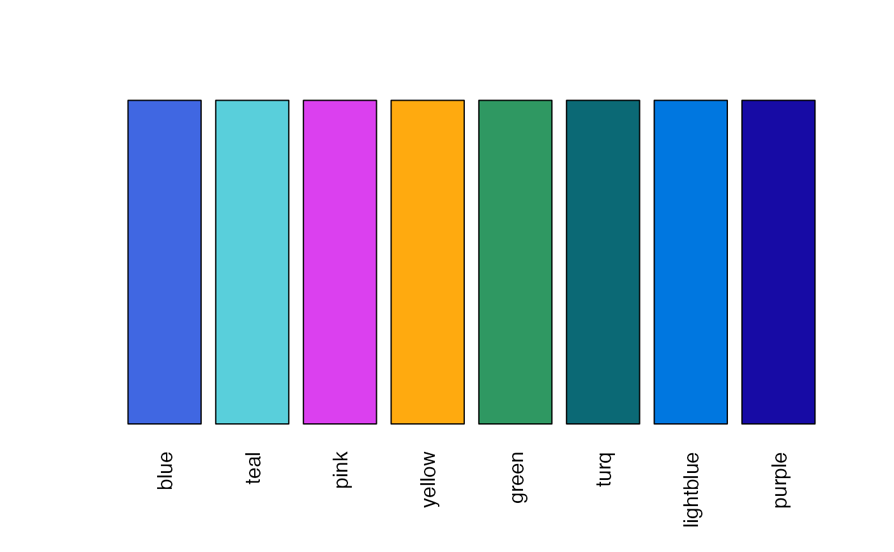
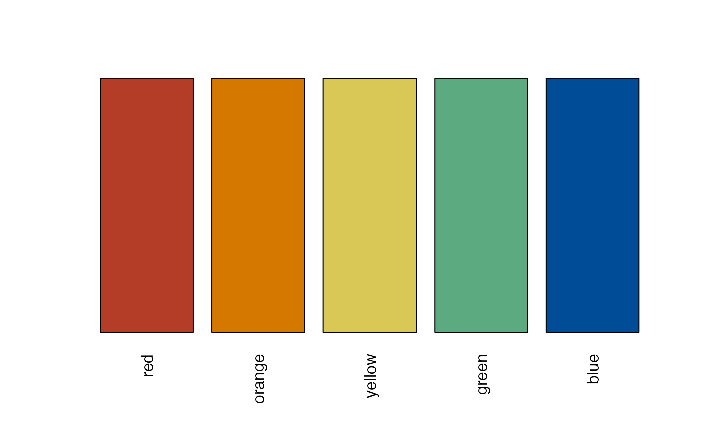
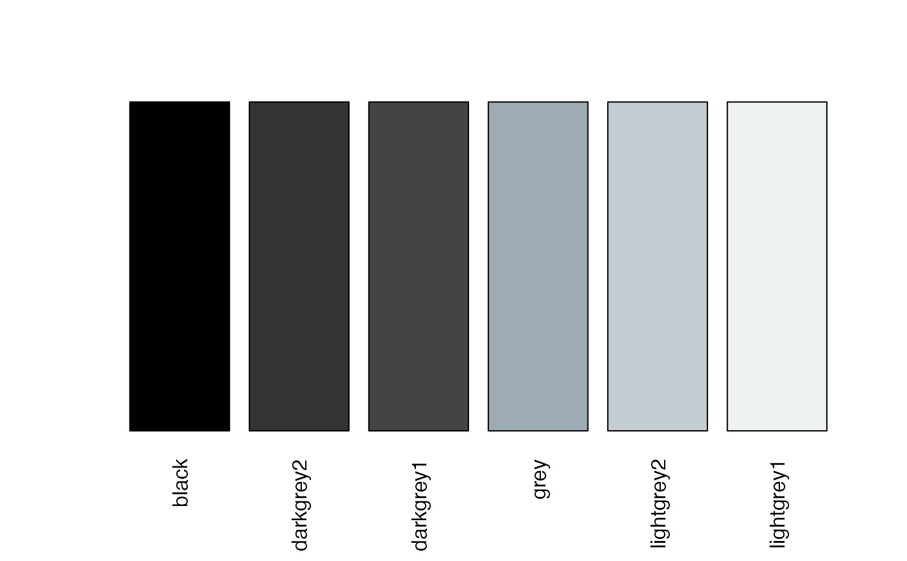
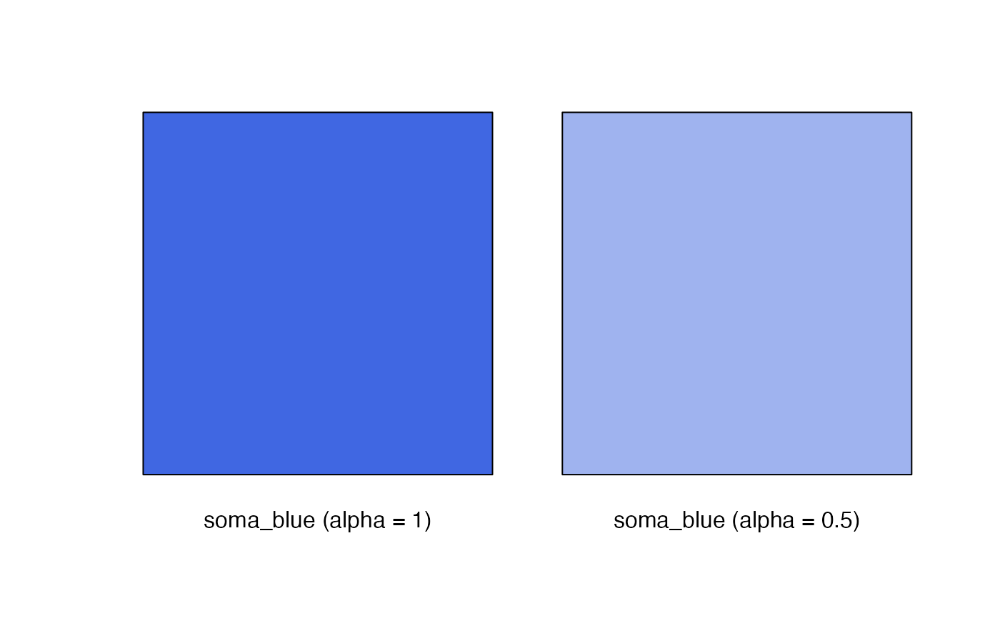
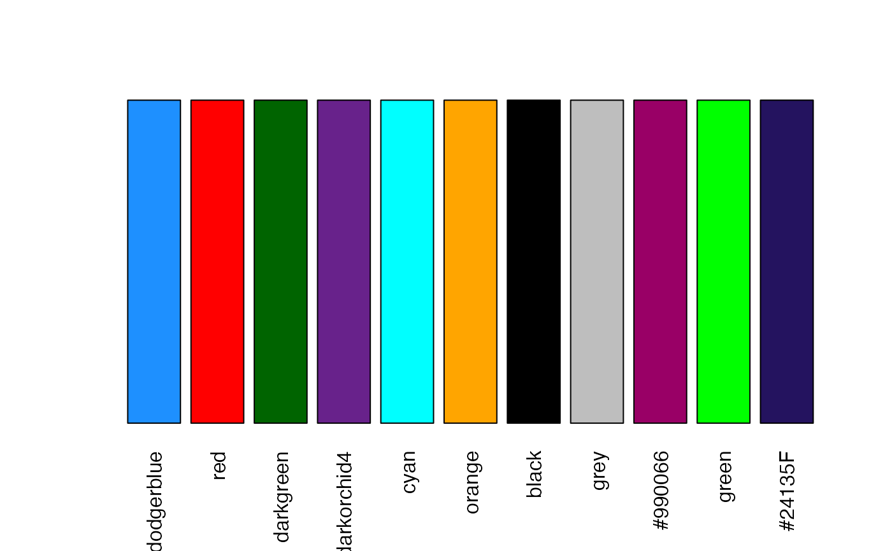
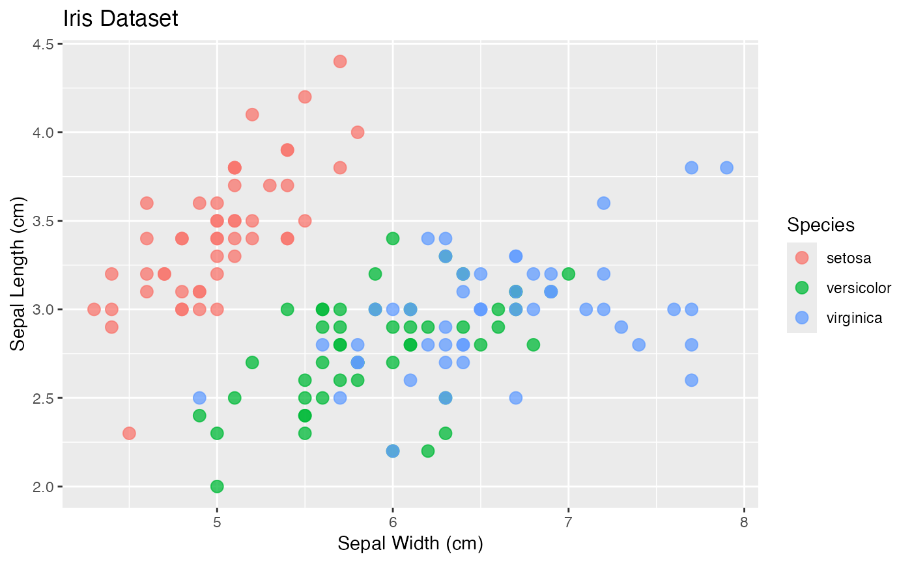
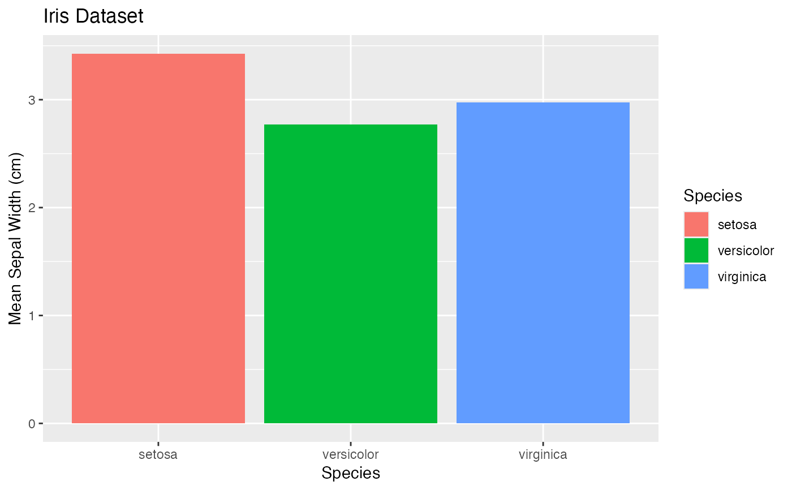
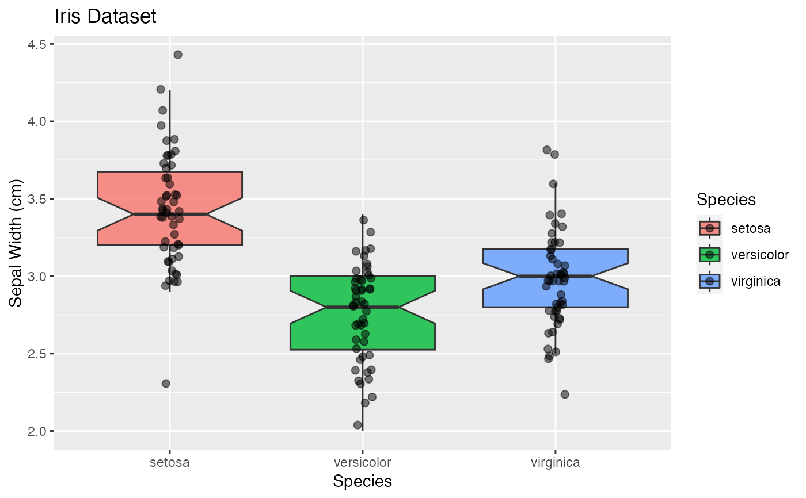
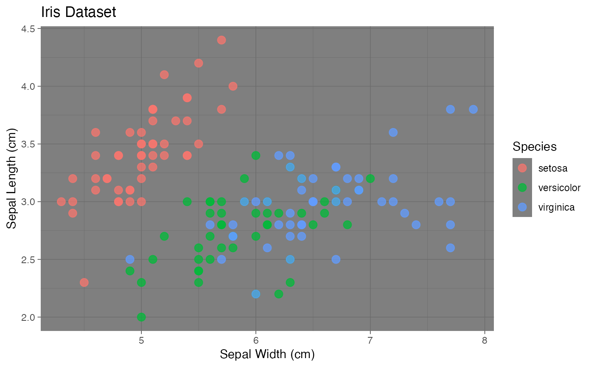
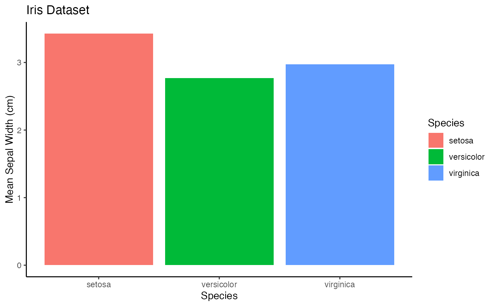

This package contains numerous color palettes, themes, and base ggplot2 graphics objects that are used to coordinate and display a consistent visual graphics presentation. In most cases the color palettes have been determined by the SomaLogic Commercial and Marketing teams. The ggplot2 objects are intended to be used for palette and theme testing. See the description of each object below.
Usage
soma_colors2
soma_colors
soma_colors_risk
soma_colors_greys
soma_blue
soma_purple
col_string
ggsoma_colors2
The new official "Soma-Colors" after a 2020 re-branding.
Includes a new "Soma-Blue" plus other blues, a greens, yellow, pink, and purple:
| Color | Hex-code |
blue | #4067E2 |
teal | #1FA8BC |
pink | #BC10E0 |
yellow | #FF8B04 |
green | #14753D |
turquoise | #02444F |
lightblue | #0051D2 |
purple | #170BA5 |
Note the following common color-to-group mappings:
| Controls/Non-Events/Placebo | --> | blue |
| Cases/Events/Intervention | --> | teal |
| Female | --> | yellow |
| Male | --> | green |
soma_colors
The former official "Soma-Colors",
includes "Soma-Purple" plus a green, blue, and two shades of grey:
| Color | Hex-code |
purple | #24135F |
lightgreen | #00A499 |
lightgrey | #707372 |
magenta | #840B55 |
lightblue | #006BA6 |
yellow | #D69A2D |
darkgreen | #007A53 |
darkblue | #1B365D |
darkgrey | #54585A |
blue | #004C97 |
soma_colors_risk
The official "Soma-Risk Colors" for risk designations.
Includes red, orange, yellow, green, blue:
| Color | Hex-code |
red | #B33D26 |
orange | #D57800 |
yellow | #D9C756 |
green | #5CAA7F |
blue | #004C97 |
soma_colors_greys
The official neutral palette of grey-scale colors:
| Color | Hex-code |
black | #000000 |
darkgrey2 | #333333 |
darkgrey1 | #444444 |
grey | #9DABB2 |
lightgrey2 | #C4CDD1 |
lightgrey1 | #EEF1F2 |
soma_purple
The former official "Soma-Purple" color (retired in 2020).
Also the final entry in col_string.
col_string
A vector of colors used (sometimes internally) in various plotting routines:
[1] "dodgerblue" [2] "red" [3] "darkgreen" [4] "darkorchid4"
[5] "cyan" [6] "orange" [7] "black" [8] "grey"
[9] "#990066" [10] "green" [11] "#5A556E"
gg
A list of 3 sample ggplot figures based on the iris data set for
use in testing various themes, color palettes, and general plotting:
A scatter plot
A bar plot
A boxplot
Examples
barplot(rep_len(1, length(soma_colors2)), axes = FALSE,
col = unlist(soma_colors2),
names = names(soma_colors2), las = 2)

barplot(rep_len(1, length(soma_colors)), axes = FALSE,
col = unlist(soma_colors),
names = names(soma_colors), las = 2)
barplot(rep_len(1, length(soma_colors_risk)), axes = FALSE,
col = unlist(soma_colors_risk),
names = names(soma_colors_risk), las = 2)

barplot(rep_len(1, length(soma_colors_greys)), axes = FALSE,
col = unlist(soma_colors_greys),
names = names(soma_colors_greys), las = 2)

barplot(c(1, 1), col = c(soma_blue, ggplot2::alpha(soma_blue, 0.5)), axes = FALSE,
names = paste("soma_blue", c("(alpha = 1)", "(alpha = 0.5)")))

barplot(c(1, 1), col = c(soma_purple, ggplot2::alpha(soma_purple, 0.5)), axes = FALSE,
names = paste("soma_purple", c("(alpha = 1)", "(alpha = 0.5)")))
barplot(rep_len(1, length(col_string)), axes = FALSE,
col = col_string, names = col_string, las = 2)

gg$point

gg$bar

gg$box

gg$point + ggplot2::theme_dark()

gg$bar + ggplot2::theme_classic()
